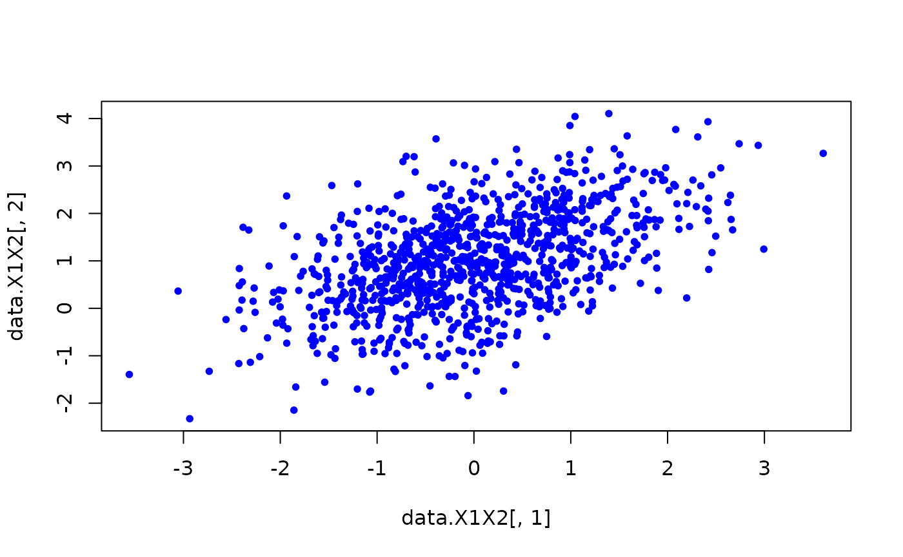

Introduction
To demonstrate the R package algebraic.dist, we consider the relatively simple case of an observed sample of, we assume, i.i.d. random variables \(X_1,\ldots,X_n\) with multivariate normal distribution.
library(algebraic.dist)
#>
#> Attaching package: 'algebraic.dist'
#> The following object is masked from 'package:grDevices':
#>
#> pdfGenerating a sample
We define the parameters of the MVN with:
We observe a sample of size 100 with:
n <- 100
data <- sampler(M)(n)
head(data, n = 8)
#> [,1] [,2] [,3]
#> [1,] -1.62464473 1.1969000 1.693928
#> [2,] 0.56582157 1.2275760 1.170459
#> [3,] -0.22326782 0.6988296 2.545295
#> [4,] 1.14300304 0.5905328 2.821068
#> [5,] -1.19033947 0.6612848 1.827059
#> [6,] 0.02207053 2.0501376 1.267967
#> [7,] 1.09190905 1.8195959 3.256572
#> [8,] -0.90082556 1.2717078 1.555612
support <- sup(M)
infinum(support)
#> [1] -Inf -Inf -Inf
supremum(support)
#> [1] Inf Inf Inf
dim(support)
#> [1] 3
X1X2 <- marginal(M, c(1,2))
rv <- sampler(X1X2)
# sample some data; could just use data directly
data.X1X2 <- rv(1000)
# scatter plot a 2d sample
plot(data.X1X2[,1], data.X1X2[,2], pch = 20, col = "blue")